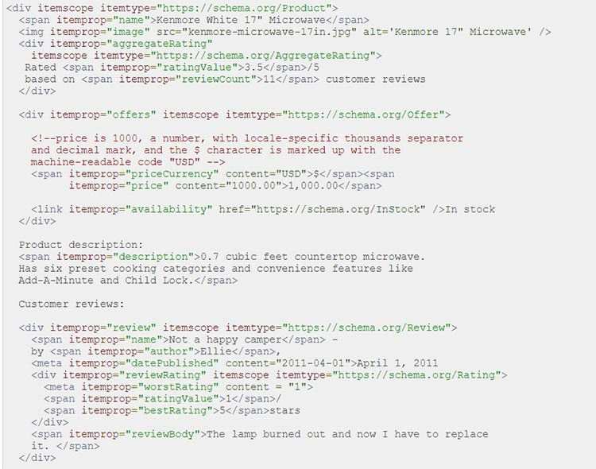
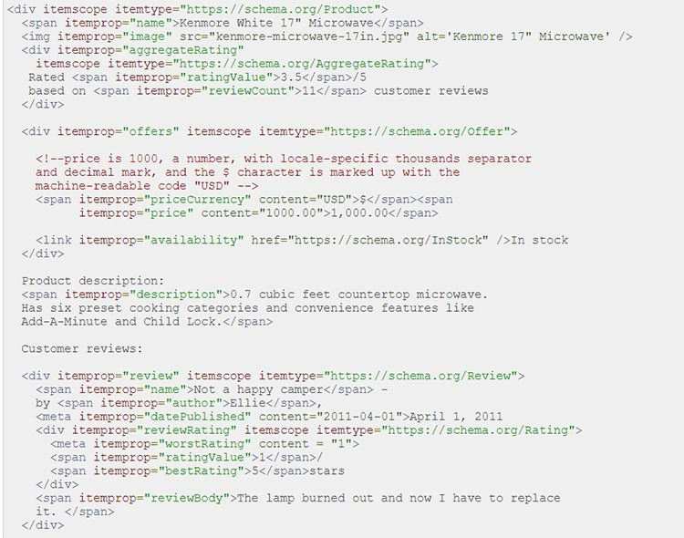

В чем заключаются преимущества микроразметки?
В первую очередь, микроразметка сайта удобна для пользователя - тем, что кратко передает содержание нужной страницы. Например, если у вас интернет-магазин, пользователь может увидеть цену товара, ключевые характеристики и отзывы покупателей. Если есть точка в офлайне, в микроразметке можно увидеть ее время работы, адрес и контактные данные. Если вы публикуете статьи, то разметка отображает выходные данные и автора каждого материала.
Кроме того, использование микроразметки делает сайт более привлекательным визуально в поисковой выдаче. Красивый сниппет хорош с точки зрения кликабельности, что увеличивает позицию в выдаче (но это происходит не сразу, а в соответствии с реакцией пользователей) и увеличивает посещаемость сайта. Не факт, что это сработает сразу, но если делать эту работу качественно, а параллельно совершенствовать контент, верстку и ассортимент, то можно добиться более чем положительного эффекта, так как это работает и на людей, и на поисковики.
Если вы используете микроразметку, то необходимо делать это со всем контентом сайта. Для интернет-магазина это, в первую очередь, каталог товаров, отдельные позиции и категории, а также статьи на сайте. Любые структурированные данные должны соответствовать контенту конкретной веб-страницы, в код которой они добавлены, и не должны описывать скрытую от посетителей информацию.
Что такое микроразметка и зачем она нужна?
19 сентября 2023
Микроразметка — это специальные теги и атрибуты в веб-верстке, использующиеся для лучшего понимания информации на страницах сайта поисковыми роботами. Ее использование помогает получить качественные переходы на сайт, тем самым увеличив трафик без лишних затрат бюджета.
Составляющие микроразметки сайта
Микроразметка сайта состоит из тегов и атрибутов, отвечающих за конкретное содержимое: некоторые из них видны посетителям, некоторые нужны для поисковых роботов. Если брать во внимание ассортимент интернет-магазина, то в сниппет можно вставить описание и фото товара, отзывы о нем, информацию о наличии в продаже.
Микроразметка сайта состоит из тегов и атрибутов, отвечающих за конкретное содержимое: некоторые из них видны посетителям, некоторые нужны для поисковых роботов. Если брать во внимание ассортимент интернет-магазина, то в сниппет можно вставить описание и фото товара, отзывы о нем, информацию о наличии в продаже.
Словари микроразметки
В микроразметке существует несколько словарей, то есть наборов атрибутов. Поговорим о наиболее распространенных и широко используемых в современном интернете.
В микроразметке существует несколько словарей, то есть наборов атрибутов. Поговорим о наиболее распространенных и широко используемых в современном интернете.
1. Schema.org
Cловарь Schema.org создавался сразу несколькими поисковиками для предоставления основной информации об объекте (в том числе товаре) без необходимости заходить на сайт. В нем есть три основных атрибута (itemscope — указывает на сам объект, itemtype — на его тип, itemprop — на свойства, если речь идет о товарах, то это могут быть, например, цена и описание).
Cловарь Schema.org создавался сразу несколькими поисковиками для предоставления основной информации об объекте (в том числе товаре) без необходимости заходить на сайт. В нем есть три основных атрибута (itemscope — указывает на сам объект, itemtype — на его тип, itemprop — на свойства, если речь идет о товарах, то это могут быть, например, цена и описание).
2. Open Graph
Изначально этот словарь был разработан Facebook* для корректного отображения веб-страниц в соцсетях, но сейчас его поддерживают и мессенджеры, в том числе популярный ныне на российском рынке Telegram. У него также есть ряд атрибутов:
Изначально этот словарь был разработан Facebook* для корректного отображения веб-страниц в соцсетях, но сейчас его поддерживают и мессенджеры, в том числе популярный ныне на российском рынке Telegram. У него также есть ряд атрибутов:
| «og:locale» | местоположение сайта и язык контента |
| «og:type» | тип отображаемого контента (обзор, статья и т.д.) |
| «og:title» | метатег title |
| «og:description» | метатег description |
| «og:url» | адрес веб-страницы |
| «og:image» | изображение в тексте статьи, обзора, описания и т.д. |
| «og:site_name» | название сайта |
Микроформаты
Это специальный вариант разметки, помогающий поисковым ботам понимать контент. Основная их задача - рассказать о содержащихся данных. Для интернет-магазина важны такие данные, как адрес и контакты, описания товаров и отзывы.
Для работы с информацией сайта интернет-магазина подходит формат hCard, который поддерживают и Google, и Яндекс.Он структурирует географические координаты и контактные данные сайта, которые автоматически передаются в справочники поисковиков, в том числе при изменении.
Это специальный вариант разметки, помогающий поисковым ботам понимать контент. Основная их задача - рассказать о содержащихся данных. Для интернет-магазина важны такие данные, как адрес и контакты, описания товаров и отзывы.
Для работы с информацией сайта интернет-магазина подходит формат hCard, который поддерживают и Google, и Яндекс.Он структурирует географические координаты и контактные данные сайта, которые автоматически передаются в справочники поисковиков, в том числе при изменении.
Синтаксисы микроразметки
Под синтаксисом микроразметки понимается способ применения словаря. Унифицированного стандарта синтаксиса нет, но есть несколько наиболее часто используемых.
Под синтаксисом микроразметки понимается способ применения словаря. Унифицированного стандарта синтаксиса нет, но есть несколько наиболее часто используемых.
Microdata
Так называемые микроданные состоят из нескольких элементов (вспомним атрибуты itemscope, itemtype и itemprop в Schema.org). Размечаются обычно те данные, которые уже доступны пользователю, но иногда для разметки необходимы и метаданные.

Так называемые микроданные состоят из нескольких элементов (вспомним атрибуты itemscope, itemtype и itemprop в Schema.org). Размечаются обычно те данные, которые уже доступны пользователю, но иногда для разметки необходимы и метаданные.

Пример микроразметки schema.org в формате Microdata.
Реализация микроразметки
1. Статьи
Для публикуемых на сайте статей (у интернет-магазина это может быть блог или советы экспертов) используются следующие атрибуты:
2. Хлебные крошки
Так называется система навигации на сайте, демонстрирующая структуру и вложенность страниц. Можно сделать линейную цепочку навигации либо систему с возможностью вернуться назад на главную страницу или в каталог товаров. Хлебные крошки повышают уникальность сниппета, появляясь в поисковой выдаче.
Для разметки хлебных крошек используются следующие теги:
1. Статьи
Для публикуемых на сайте статей (у интернет-магазина это может быть блог или советы экспертов) используются следующие атрибуты:
| headline | название материала |
| datePublished | дата публикации |
| image | изображение |
| articleBody | основной текст статьи |
| author | автор |
| publisher | название ресурса, на котором статья была опубликована |
2. Хлебные крошки
Так называется система навигации на сайте, демонстрирующая структуру и вложенность страниц. Можно сделать линейную цепочку навигации либо систему с возможностью вернуться назад на главную страницу или в каталог товаров. Хлебные крошки повышают уникальность сниппета, появляясь в поисковой выдаче.
Для разметки хлебных крошек используются следующие теги:
| itemscope | указание на описываемый объект |
| itemtype | указание на тип объекта |
| itemprop="itemListElement" | указывает на принадлежность элемента к списку |
| itemprop="item" | указывает на ссылку |
| itemprop="name" | указывает на название хлебной крошки |
| meta itemprop="position" content="%number%" | указывает на позицию элемента в цепочке навигации |
Микроразметка товаров в интернет-магазине
Google и Яндекс рекомендуют устанавливать микроразметку на разделы и страницы с ассортиментом товаров для интернет-магазина: поисковые боты могут использовать эти данные для сниппета, что, в свою очередь, побуждает пользователя перейти по ссылке.
Для товаров достаточно атрибутов name (название), description (описание), image (изображение), price (цена) и priceCurrency (валюта). Если вы хотите добавить в сниппет отзывы, необходимо поле AggregateRating.
Google и Яндекс рекомендуют устанавливать микроразметку на разделы и страницы с ассортиментом товаров для интернет-магазина: поисковые боты могут использовать эти данные для сниппета, что, в свою очередь, побуждает пользователя перейти по ссылке.
Для товаров достаточно атрибутов name (название), description (описание), image (изображение), price (цена) и priceCurrency (валюта). Если вы хотите добавить в сниппет отзывы, необходимо поле AggregateRating.
Проверка микроразметки на ошибки
Готовую разметку нужно проверить ее на ошибки - только правильно структурированные данные доступны поисковым роботам. В Google это делается на странице валидатора, которая отображает малейшие ошибки в отчете и тем самым дает возможность их исправить.
Для проверки в Яндексе используется валидатор в вебмастере, где проблемы и несоответствия отмечаются красным с комментариями. Соответственно, все ошибки также можно отследить и исправить.
Готовую разметку нужно проверить ее на ошибки - только правильно структурированные данные доступны поисковым роботам. В Google это делается на странице валидатора, которая отображает малейшие ошибки в отчете и тем самым дает возможность их исправить.
Для проверки в Яндексе используется валидатор в вебмастере, где проблемы и несоответствия отмечаются красным с комментариями. Соответственно, все ошибки также можно отследить и исправить.
Подведем кратко итоги. Микроразметка нужна, чтобы сделать сниппеты более заметными. Это может влиять на ранжирование, но не напрямую, а через поисковое поведение пользователей. Размечаться должен весь контент, без ошибок: все атрибуты должны быть прописаны правильно. Однако валидаторы поисковых систем способны проверять код разметки, тем самым помогая исправлять ошибки. Главное - не забывать это делать.
*Instagram и Facebook принадлежат компании Meta, чья деятельность запрещена на территории России с 21 марта 2022 года.
«Микроразметку используем всегда на любых типах проектов. Трудностей на практике бывает мало. Чаще всего, программист при внедрении правок может задать уточняющие вопросы, если возникнут сложности. В Яндексе сейчас, микроразметка никак не влияет на основные показатели. CTR увеличивается ненамного только после загрузки YML-файла, который улучшает представление сниппета в поиске. Также в сниппет автоматически добавляется рейтинг магазина из Яндекс.Маркета. В Google ситуация иначе. Микроразметка напрямую влияет на отображение в поисковой выдаче. Конкретно, разметка хлебных крошек, информация о продуктах, информация о разделах. По ситуации применяются эмодзи. Также периодически нужна разметка о событиях. Именно эта разметка показывается на выдаче и влияет на CTR, что способствует повышению средней позиции и соотвественно трафику.»
«При оптимизации любого сайта обязательно проверяется наличие микроразметки. Внедрить её на сайт не так сложно, к тому же у поисковиков есть свои инструменты для проверки структурированных данных, а в Google даже есть инструмент, который поможет добавить разметку на страницу сайта. Для интернет-магазинов пригодится микроразметка товаров. Для этого в словаре семантической разметки schema.org есть типы данных Product и Offer. После добавления такой микроразметки, сниппет страницы товара, помимо заголовка и описания, будет содержать цену, рейтинг, наличие, изображение, информацию об акциях и доставке. Микроразметка необходима для формирования расширенного сниппета, который будет включать в себя больше информации о содержимом страницы и, соответственно, получать больше кликов. Увеличение CTR положительно влияет на ранжирование и посещаемость сайта.»